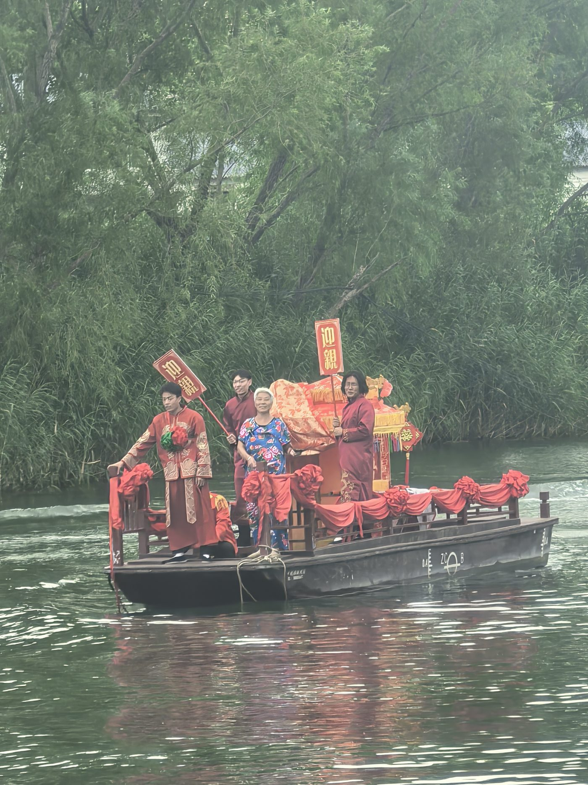

主题观察 · 2026 年 9 月 4 日
苇水之间，烟火留声：读懂白洋淀的水乡民俗

万顷苇荡、千淀碧水，白洋淀不止有动人的湿地风光与雁翎队红色往事。千百年来，水上人家依淀而生，“以水为田、以苇为金”，在渔猎劳作、日常起居、岁时节庆之中，沉淀出一套独属于华北水乡的鲜活民俗文化。这些根植于水土的习俗、手艺与记忆，是“人淀共生”最生动的民间注解。
芦苇，是白洋淀民俗最重要的物质底色。自古流传“一淀芦苇一淀金”的说法。芦苇编织在这里延续数千年，苇席、苇箔曾经是家家户户的生活必需品。如今，芦苇画作为河北省非物质文化遗产，把寻常苇草变为雕刻山水花鸟的艺术作品；蒲草编织手艺也在杨庄子村的工坊重获新生，将蒲草做成花瓶、抱枕等文创物件，让老手艺适配当代生活。苇编不只是一门手艺，更是淀区百姓顺应湿地环境生存的智慧结晶。
淀上还留存着独有的生活习俗：古时水乡婚嫁没有花轿，便以船轿迎亲，锣鼓声响伴着行船水波，完成独属于水上村落的嫁娶仪式；农历七月十五放荷灯，点点灯火浮于水面，寄托着水乡百姓对平安顺遂的祈愿。全鱼宴、荷叶美食等特色饮食，就地取用淀中水产物，沉淀出水乡独有的饮食风味。圈头村音乐会这类古老笙管乐，代代传唱，保留着明清古曲的韵味，是水乡珍贵的音乐非遗。
这些鲜活的民俗，和白洋淀的生态、红色历史本是一体：芦苇既是候鸟栖息家园，是雁翎队开展水上游击的天然屏障，也是渔家百姓赖以谋生的原料。但在调研走访中我们看到，如今这些民俗资源正面临现实挑战。随着生产生活方式变迁，不少传统渔猎技法渐渐淡出日常生活；苇编、蒲草编织的好手大多年事已高，年轻人外出务工，技艺后继乏人；大量老人口述的渔家故事、旧时风俗，缺少便捷的对外传播渠道。很多游客来到白洋淀，只看到苇荡荷花，却很少读懂风景背后，世代水上人家的烟火过往。民俗资源如同散落的珍珠，埋藏在村落的烟火之中，却难以完整呈现在游客面前。
民俗传承，不只是陈列展品、静态展示，更需要让普通人听见本地人讲述自己的生活。这也正是虚拟数字人青翎构想的重要出发点。青翎形象中融入苇编、荷花等民俗符号，通过素材投稿通道，邀请本地老人、手艺人上传口述故事、工艺实拍，把淀区活态民俗收纳进知识库。游客行走在王家寨、邵庄子等水乡村落，借助点位触发讲解，就可以听见苇编手艺的故事、旧时淀上婚俗与渔猎往事。让藏在村落里的水乡记忆，走出村落，被更多到访者看见。
生态修复让碧水苇荡重回白洋淀，而民俗烟火，则让这片水土拥有温度。守护白洋淀，既要守护好一淀碧水，也要留住世代在此生长的生活记忆，真正实现人与自然、历史烟火的人淀共生。